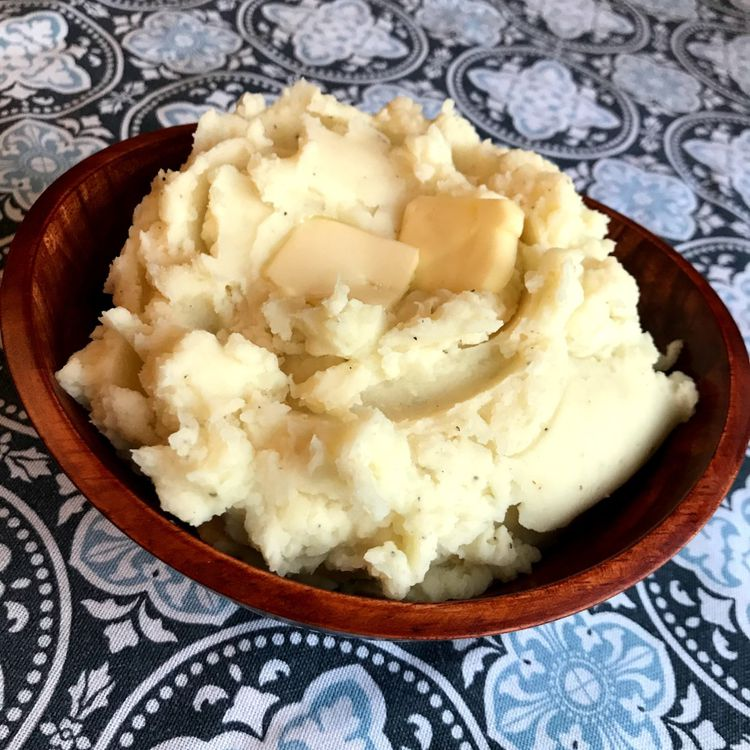

Home
Perfect Mashed Potatoes

Ingredients
- 3 large russet potatoes, peeled and cut in half lengthwise
- 1/2 cup whole milk
- 1/4 cup butter
- salt and ground black pepper to taste
Steps
- Place potatoes in a large pot and cover with salted water. Bring to a boil. Reduce heat to medium-low, cover, and simmer until tender, 20 to 25 minutes.
- Drain potatoes, then return to the pot. Turn heat to high and allow potatoes to dry for about 30 seconds. Turn off heat.
- Mash potatoes with a potato masher twice around the pot, then add milk and butter. Continue to mash until smooth and fluffy. Whisk in salt and black pepper until evenly distributed, about 15 seconds.